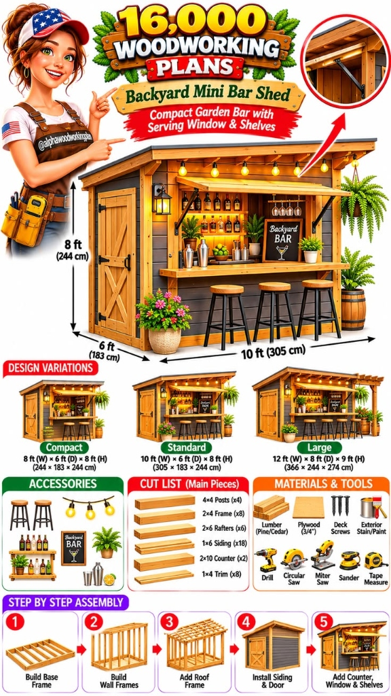

Backyard Mini Bar Shed: Build Your Own Outdoor Bar for the Ultimate Backyard Makeover!
Transform Your Backyard into a Stylish Entertainment Oasis with a Fold-Up Serving Awning, Wide Drink Counter, and Built-In Shelving!

Imagine transforming your ordinary backyard into a beautiful outdoor entertainment space with a stylish wooden mini bar shed! 🍹 A Backyard Mini Bar Shed is more than just a DIY woodworking project — it's a perfect place to entertain friends, enjoy summer evenings, and create unforgettable memories right in the comfort of your home.
Whether you love woodworking or want to upgrade your outdoor living space, this project is worth adding to your DIY bucket list! With a weather-resistant sloped roof, fold-up serving window awning, deep drink counter, interior shelves, and warm ambient lighting, this compact garden bar turns any patio or lawn into a vibrant social retreat.
At AlphaWoodworkingPlan, we share practical woodworking ideas, cutting-edge blueprints, and step-by-step guides to help DIY enthusiasts build outdoor structures that last for decades. Let's dive into everything you need to know to construct your dream backyard bar!
1. Why Build a Backyard Mini Bar Shed?
A backyard mini bar shed combines functionality, creativity, and modern outdoor design. It provides a dedicated space for serving drinks, storing bar accessories, chilling ice, and entertaining guests without taking up excessive lawn or patio real estate.
The design shown in our blueprint features a compact wooden structure with a serving window, fold-up awning shutter supported by mechanical gas struts, a wide solid wood counter, back-bar shelves, and decorative overhead lighting.
Why you'll love this project:
- 🎉 Perfect for Backyard Gatherings: Serve cocktails, cold drinks, iced tea, and barbecue snacks effortlessly during family cookouts and summer parties.
- 🍹 Stylish Serving Counter with Shelves: Keep glassware, cocktail shakers, bottles, and garnishes neatly organized within arm's reach.
- 🏡 Compact Footprint for Any Garden: Maximizes vertical storage and serving width while occupying minimal ground space.
- ✨ Customizable Lighting & Decor: Easily hang bistro string lights, rustic chalkboard signs, and hanging fern planters to suit your style.
- 🛠️ Rewarding DIY Woodworking Project: Built using readily available standard nominal lumber (4x4, 2x4, 2x6, 1x6) with straightforward carpentry techniques.
Want to Discover Thousands of Woodworking Projects You Can Build at Home?
Explore this collection of 16,000 woodworking plans with detailed project ideas, clear instructions, step-by-step diagrams, and exact material cut lists.
Affiliate disclosure: We may earn a commission if you purchase through this link, at no additional cost to you.
2. Backyard Mini Bar Shed Dimensions
The featured standard design measures approximately 10 feet wide, 6 feet deep, and 8 feet high. It offers ample interior standing room for a bartender, generous storage shelves, and comfortably accommodates 3 to 4 bar stools across the serving counter.
Three Custom Size Variations
You can easily customize the design according to your property lines, patio layout, and intended party capacity:
Compact Bar Shed
8 ft (W) × 6 ft (D) × 8 ft (H)
244 × 183 × 244 cm
Ideal for cozy townhouse courtyards, smaller patios, and intimate 2-stool seating setups.
Standard Bar Shed
10 ft (W) × 6 ft (D) × 8 ft (H)
305 × 183 × 244 cm
The sweet-spot size featured in our blueprint illustration. Seats 3 to 4 adults with spacious back-bar storage.
Large Bar with Pergola
12 ft (W) × 8 ft (D) × 9 ft (H)
366 × 244 × 274 cm
Oversized setup featuring an attached side pergola extension, mini-fridge alcove, and wrap-around counter seating.
3. Materials and Tools You'll Need
Before breaking ground or cutting lumber, gather all structural materials, fasteners, and workshop tools. Choosing weather-resistant lumber and exterior-rated fasteners will protect your outdoor bar against rain, sun, and seasonal temperature swings.
🪵 Main Materials
- 4×4 Wooden Posts: Ground-contact pressure-treated corner foundation posts.
- 2×4 Lumber: Wall studs, base frame perimeter, and door frames.
- 2×6 Lumber: Sloped roof rafters, collar ties, and structural headers.
- 1×6 Siding Boards: Shiplap, cedar bevel, or tongue-and-groove exterior siding.
- 2×10 Counter Boards: Solid kiln-dried cedar or pine for the durable serving counter.
- ¾-inch Exterior Plywood: Subfloor decking and roof sheathing.
- Fasteners: 3" exterior star-drive decking screws, galvanized framing nails, and joist hangers.
- Finishes: UV-resistant outdoor wood stain, exterior satin paint, and water sealant.
- Hardware: Heavy-duty T-hinges, pad-lockable barrel latch, gas struts / strut props for the awning window.
🛠️ Essential Tools
- Cordless Drill & Impact Driver: For fast, reliable framing and decking screw installation.
- Circular Saw: For ripping plywood sheathing and cutting wall boards.
- Miter Saw: For clean, square 90° cross-cuts and angled rafter ends.
- Random Orbital Sander: To ease edges and create a splinter-free bar counter.
- Measuring Tape & Speed Square: For precision layout and plumb angle verification.
- 4-Foot Carpenter's Spirit Level: To ensure a perfectly flat foundation and level bar top.
- Personal Protective Equipment (PPE): Safety glasses, dust mask, and hearing protection.
Blueprint Cut List (Main Pieces)
Reference schedule matching our illustrated blueprint graphic:
4. Step-by-Step Backyard Mini Bar Shed Construction
Follow this 5-step assembly sequence to build a rock-solid, weather-tight mini bar shed:
Step 1: Build the Base Frame
Start by measuring and assembling a strong 10' × 6' rectangular foundation frame using pressure-treated 2×4 or 2×6 floor joists spaced 16 inches on-center. Level the base over compacted gravel, concrete pavers, or concrete deck blocks.
Pro Tip: Measure diagonally corner-to-corner; when both diagonal measurements match exactly, your base is 100% square. Fasten ¾-inch exterior-grade tongue-and-groove plywood decking with 2½" exterior screws.
Step 2: Build the Wall Frames
Construct the front, back, and two side wall frames flat on the deck before tipping them into place. Frame the front wall with a wide double-header opening for your 6-foot serving window. Frame one side wall with a rough opening for the side access door.
Raise the walls, brace them temporarily with scrap lumber, verify plumb with your spirit level, and screw the sole plates securely into the floor perimeter joists.
Step 3: Add the Roof Frame
Install six 2×6 roof rafters spanning front-to-back with a single-pitch shed slope (higher in the front, sloping gently downward toward the back) to direct rainwater away from the serving counter.
Cut birdsmouth notches where rafters seat on wall top plates, extend a generous 8-to-12 inch roof overhang over the front bar counter, and sheath with ½" exterior plywood followed by asphalt shingles or corrugated metal roofing.
Step 4: Install Siding and Door
Attach the exterior 1×6 siding boards (or charcoal shiplap panels as pictured) horizontally across the exterior studs. Fabricate the side entrance door using tongue-and-groove boards with a classic rustic Z or X-brace on the exterior.
Hang the door using heavy-duty black matte T-hinges and install a secure pad-lockable slide bolt. Sand all rough corners and exposed board edges thoroughly.
Step 5: Add Counter, Window, and Shelves
Install two 2×10 counter boards joined with waterproof wood glue and pocket screws, cantilevered 8 inches outside the front window frame to create ample legroom for stools. Build a fold-up window awning shutter mounted on top continuous piano hinges and support it with gas strut arms or mechanical prop stays.
Inside, build multi-tiered back-bar shelves for glassware and spirits, hang an overhead stemware rack, and complete the ambiance with warm Edison bulb string lights and weather-resistant bar stools!
Ready to Take Your Woodworking Skills to the Next Level?
Don't waste hours searching for random DIY ideas online. Discover a massive collection of 16,000 professional woodworking projects with complete dimensioned cut lists and step-by-step assembly guides.
Affiliate disclosure: We may earn a commission if you purchase through this link, at no additional cost to you.
5. Customize Your Outdoor Bar
The best part of building your own Backyard Mini Bar Shed is personalization! You can style it to complement your home's exterior or turn it into a dedicated tropical tiki hut, rustic farmhouse saloon, or sleek modern cocktail lounge.
💡 Warm LED String Lights
Drape shatterproof outdoor Edison bulbs across the roof rafters and awning edge to create a cozy, pub-like evening atmosphere.
🎨 Rustic Wooden Bar Sign
Mount a personalized wooden sign or chalkboard menu above the counter to feature the cocktail of the day or family bar name.
🪑 Weather-Resistant Stools
Add heavy-gauge metal frame bar stools with sealed solid hardwood swivel tops for maximum comfort and durability.
🌿 Living Plants & Greenery
Hang Boston ferns in macrame planters and set potted mint, basil, and rosemary on the counter for fresh cocktail garnishes.
Whether you choose a farmhouse, rustic timber, modern charcoal, or classic American backyard aesthetic, the natural warmth of handcrafted wood elevates the look of your entire property.
6. Is This DIY Project Worth Building?
Absolutely! A Backyard Mini Bar Shed can turn an underutilized outdoor corner into a functional, vibrant entertainment area that increases your outdoor living square footage and boosts your home’s hospitality appeal.
It is exceptionally well-suited for homeowners who love hosting weekend cookouts, game days, and family dinners. Before building, always make sure to:
- Check local municipal building codes, setback distances, and HOA accessory structure guidelines.
- Ensure proper electrical safety if wiring GFCI outdoor outlets or mini-refrigerators.
- Level your ground foundation thoroughly to ensure positive roof drainage.
Your Next Amazing Woodworking Project Could Be Just One Plan Away!
Explore more creative woodworking ideas, detailed instructions, shed blueprints, and workshop inspiration here:
Affiliate disclosure: We may earn a commission from qualifying purchases through this link, at no extra cost to you.
Frequently Asked Questions
Do I need a building permit for a backyard mini bar shed?
In most American counties and cities, detached accessory garden structures with a footprint under 100 to 120 square feet (such as our 10' × 6' / 60 sq ft standard model) do not require a formal building permit. However, always verify local property boundary setback rules (typically 3 to 5 feet from fence lines) and HOA bylaws before building.
What lumber is best for building an outdoor bar shed?
Use pressure-treated lumber for any components that touch the ground or concrete sleepers. For framing, standard kiln-dried SPF 2x4s and 2x6s work well when properly protected. For the visible bar counter and siding, Western Red Cedar, redwood, or exterior-primed pine finished with UV-resistant spar urethane will offer the best longevity.
How does the fold-up serving window awning stay open?
As shown in our blueprint inset, you can install automotive-grade 100N–150N gas lift struts or heavy-duty folding locking stay hinges. When unlocked, the struts smoothly push the wooden awning up and hold it firmly in place even on breezy days.
What is the ideal height for an outdoor bar counter?
The standard commercial bar height is 42 inches (107 cm) from the floor. This pairs perfectly with standard 28-to-30-inch bar stools and allows comfortable standing room for drink prep and casual leaning.
Can I install electricity and plumbing inside the mini bar?
Yes! Many woodworkers run an underground 20-amp exterior UF-B conduit to power mini-fridges, blenders, and LED strip lighting. Ensure all outlets are GFCI protected and weather-covered. For plumbing, connecting an outdoor garden hose quick-connect to a bar sink drain basin is a popular, cost-effective solution.
How much does it cost to build this DIY mini bar shed?
The standard 10' × 6' model typically costs between $320 and $750 in materials depending on whether you choose economical dimensional pine or premium rot-resistant cedar, and your selection of roofing materials. This represents thousands of dollars in savings compared to pre-fabricated outdoor bar kits.
Final Thoughts
A Backyard Mini Bar Shed is a fantastic way to combine woodworking, creativity, and outdoor entertainment. With the right materials, careful measurements, and proper construction, you can create a beautiful backyard feature that your family, friends, and neighbors will love for seasons to come.
Start planning your project today, customize the dimensions and finishes to match your outdoor landscape, and enjoy the pride of building something truly special with your own hands!
Ready for your next woodworking adventure?
👉 Explore the complete woodworking plans collection:
Disclosure: This post contains an affiliate link. I may earn a commission if you purchase through this link, at no additional cost to you.